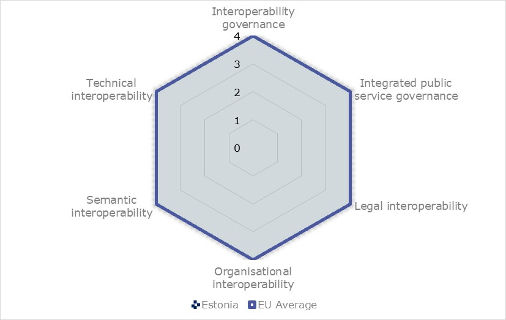

Digital Public Administration factsheet 2021
Estonia
ISA2
Table of Contents
1 Country Profile 4
2 Digital Public Administration Highlights 10
3 Digital Public Administration Political Communications 12
4 Digital Public Administration Legislation 19
5 Digital Public Administration Governance 26
6 Digital Public Administration Infrastructure 36
7 Cross-border Digital Public Administration Services for Citizens and Businesses 45
Please note that the data collection exercise for the update of the 2021 edition of the Digital Public Administration factsheets took place between March and June 2021. Therefore, the information contained in this document reflects this specific timeframe.

Country
Profile
1
Country Profile
Basic data
Population: 1 329 479 (2020)
GDP at market prices: 27 167 (2020)
GDP per inhabitant in PPS (Purchasing Power Standard EU 27=100): 86 (2020)
GDP growth rate: -2.9% (2020)
Inflation rate: -0.6% (2020)
Unemployment rate: 6.8% (2020)
General government gross debt (Percentage of GDP): 18.2 (2020)
General government deficit/surplus (Percentage of GDP): -4.9 (2020)
Area: 45 200 km²
Capital city: Tallinn
Official EU language: Estonian
Currency: Euro
Source: Eurostat (last update: 8 February 2021)
Digital Public Administration Indicators
The following graphs present data for the latest Digital Public Administration Indicators for Estonia compared to the EU average. Statistical indicators in this section reflect those of Eurostat at the time the Edition is being prepared.
Interoperability State of Play
In 2017, the European Commission published the European Interoperability Framework (EIF) to give specific guidance on how to set up interoperable digital public services through a set of 47 recommendations. The picture below represents the three pillars of the EIF around which the EIF Monitoring Mechanism was built to evaluate the level of implementation of the EIF within the Member States. It is based on a set of 71 Key Performance Indicators (KPIs) clustered within the three main pillars of the EIF (Principles, Layers and Conceptual model), outlined below.

Source: European Interoperability Framework Monitoring Mechanism 2020
For each of the three pillars, a different scoreboard was created to breakdown the results into their main thematic areas (i.e. the 12 principles of interoperability, the interoperability layers and the components of the conceptual model). The thematic areas are evaluated on a scale from one to four, where one means a lower level of implementation and 4 means a higher level of implementation. The graphs below show the result of the second EIF Monitoring Mechanism data collection exercise for Estonia in 2020.

Source: European Interoperability Framework Monitoring Mechanism 2020
Estonia’s results in Scoreboard 1 show an overall good implementation of the EIF Principles, scoring above the European average for Principle 1 (Subsidiarity and Proportionality) and 9 (Multilingualism). Possible areas of improvements are concentrated in the Principles 7 (Inclusion and Accessibility) and 12 (Assessment of Effectiveness and Efficiency) for which the score of 3 shows an upper-medium performance in the implementation of corresponding recommendations. Indeed, the use of e-accessibility specifications to ensure all public services are accessible to all citizens, including persons with disabilities, the elderly and other disadvantaged groups (Principle 7 – Recommendation 14) and the implementation of evaluation mechanisms to assess the effectiveness and efficiency of interoperable solutions (Principle 12 – Recommendation 19) are partial and could be bettered to reach the maximum score of 4.
Source: European Interoperability Framework Monitoring Mechanism 2020
The Estonian results for the implementation of interoperability layers assessed for Scoreboard 2 show an overall very strong performance with scores of 4 in each layer. Potential areas of improvement to enhance the country’s implementation of the recommendations under Scoreboard 2 are concentrated in the areas of interoperability governance. More specifically, the score of 2 for Estonia in Recommendation 23, stating that relevant catalogues of standards, specifications and guidelines at national and EU level should be consulted when procuring and developing IT solutions, could be improved.

Source: European Interoperability Framework Monitoring Mechanism 2020
Estonia’s scores assessing the Conceptual Model in Scoreboard 3 show a good performance in the implementation of recommendations associated with internal and external information sources and services, base registries, open data, catalogues, and the conceptual model itself. However, there is room for improvement with regard to security and privacy, where Estonia’s score of 2 is below that of the EU average. More specifically, the use of trust services to ensure secure data exchange in public services (Security and Privacy - Recommendation 47) hinders the overall Estonian score with regard to security and privacy.
Additional information on Estonia’s results on the EIF Monitoring Mechanism is available online through interactive dashboards.
eGovernment State of Play
The graph below presents the main highlights of the latest eGovernment Benchmark Report, an assessment of eGovernment services in 36 countries: the 27 European Union Member States, as well as Iceland, Norway, Montenegro, the Republic of Serbia, Switzerland, Turkey, the United Kingdom, Albania and Macedonia (referred to as the EU27+).
The study evaluates online public services on four dimensions:
- User centricity: indicates the extent to which a service is provided online, its mobile friendliness and its usability (in terms of available online support and feedback mechanisms).
- Transparency: indicates the extent to which governments are transparent about (i) the process of service delivery, (ii) policy making and digital service design processes and (iii) the personal data processed in public services.
- Cross-border services: indicates the extent to which users of public services from another European country can use the online services.
- Key enablers: indicates the extent to which technical and organizational pre-conditions for eGovernment service provision are in place, such as electronic identification and authentic sources.
The 2021 report presents the biennial results, achieved over the past two years of measurement of all eight life events used to measure the above-mentioned key dimensions. More specifically, these life events are divided between six ‘Citizen life events’ (Career, Studying, Family life, measured in 2020, and Starting a small claim procedure, Moving, Owning a car, all measured in 2019) and two ‘Business life events’ (Business start-up, measured in 2020, and Regular business operations, measured in 2019).

Source: eGovernment Benchmark Report 2021 Country Factsheet

Digital Public Administration Highlights
2
Digital Public Administration Highlights
Digital Public Administration Political CommunicationsThe Digital Testbed Framework was finalised in 2019 and will be launched globally in Autumn 2021. The essence of the framework is to come up with solutions, developed in public-private cooperation, that can be added to the Estonian code repository and be re-used and developed further free by all public and private stakeholders. This framework allows the government to facilitate innovative cooperation, whereby a private sector party (e.g. a company, university, or individual developer) can create additional components to the government stack or further develop previously created solutions.Digital Public Administration Legislation
Amendments to the State Assets Act were adopted by the Parliament in May 2021. These amendments allow the government to share the source code of state software for free and on an open-for-all, uniform basis. This allows companies to draw attention to possible shortcomings in the code, add to it, and develop completely new products and services based on today's e-state systems – thereby contributing to the creation of new public-private partnership projects. It creates an opportunity for these products and services to be used and further developed by different stakeholders, i.e. state, local governments, but also private market.
Digital Public Administration GovernanceThe Ministry of Economic Affairs and Communications has an amended statute as of May 2021 by which there are changes in the management of digital development and cyber-security. By reorganising the management of the Ministry in the field of digital development, the Department of State Information Systems (RISO) and the Department of Information Society Services Development (ITAO) were merged to form the Government CIO Office. Additionally, a new National Cyber Security Department was established. The main task of the Department is the management, organisation and coordination of the provision of national cyber security both domestically and internationally, developing the relevant policies and development plans and monitoring the implementation and effectiveness, leading initiatives and preparing draft legislation regulating the field.Digital Public Administration Infrastructure
In 2020 Estonia launched a new Government Open Data Portal, which gives access to open data for everyone to use, reuse and share. It can be used to launch commercial and non-profit ventures, conduct research and to do data-driven decisions. The Open Data Portal gives everyone the opportunity to consume and visualize open data and it also includes usage stories that are based on open data. The portal currently holds 791 datasets from over 100 publishers.
Digital Public Administration Political Communications
3

Digital Public Administration Political Communications
Specific Political Communications on Digital Public Administration
Joint Declaration on Cooperation for Powering Digital Transformation
In October 2020, Estonia signed a Joint Declaration of Intent titled “Cooperation for Powering Digital Transformation”, so as to cooperate in accelerating the digital transformation and digitalisation of public administration for the achievement of Sustainable Development Goals. The declaration was also signed by Germany, the International Telecommunication Union and the Digital Impact Alliance. The collaboration aims to expedite the digital transformation and help governments deploy digital public services in a cost-efficient manner by providing them with building blocks to do so, such as expertise, guidelines, best practices and case studies.
Global Declaration on the Digital Response to COVID-19
On 1 July 2020, Estonia and Singapore announced their co-sponsorship of a Global Declaration on the Digital Response to COVID-19, “Close the Digital Divides: the Digital Response to COVID-19”. The declaration was launched at a ministerial conference, aimed at providing a forum to examine how countries can emerge from the COVID-19 public health crisis stronger and better equipped by using innovative digital solutions, and working together with global partners. Thus far, 69 countries have declared their support for the declaration.
Agreement on International Certificate of Vaccination
On 5 October 2020, Estonia signed an agreement with the World Health Organization (WHO) agreeing to collaborate on the development of a digital International Certificate of Vaccination. The agreement involves working together across a variety of eHealth projects, not just the vaccination card. Other projects include a global framework for health data interoperability, and guidelines for national ePrescription and eDispensing systems, as well as the European Roadmap for the Digitalization of National Health Systems.
Berlin Declaration on Digital Society and the Value-Based Digital GovernmentIn December 2020, the Estonian government signed the Berlin Declaration on Digital Society and Value-Based Digital Government, thus re-affirming its commitment – together with other EU Member States – to foster digital transformation in order to allow citizens and businesses to harness the benefits and opportunities offered by modern digital technologies. The Declaration aims to contribute to a value-based digital transformation by addressing and strengthening digital participation and digital inclusion in European societies.Digital Agenda 2020 for Estonia
The Digital Agenda 2020 for Estonia was adopted in 2014 and reviewed at the end of 2018, providing guidance for the creation of a well-operated national information and communication technology (ICT) environment. The main goals include an ICT structure fostering economic growth, national development, welfare of the population, increased number of jobs with higher added-value, improved international competitiveness, better quality of life, smarter governance, and increased awareness of eGovernance all over the world. This policy will be replaced by the new Digital Agenda 2030, which was in public consultation and has yet to be approved. The draft of the plan is publicly available in Estonian.
Interoperability
Estonian Interoperability Framework
In Estonia, the eGovernment is fully aligned with the Estonian Interoperability Framework (EIF) in terms of terminology and general principles. An example in this regard, related to base registries in general and the Once-Only principle in particular, is Underlying Principle 9 of the EIF concerning administrative simplification. To ensure that the Estonian system complies with the EIF in this context, when the documentation of the databases is coordinated in the Management System of the State Information System (RIHA), a verification is carried out of the purposefulness of data collection and of compliance with the principle of a single request for data.
Digital Agenda 2020 for Estonia
The Digital Agenda 2020 for Estonia also focuses on interoperability, stating that ‘[t]he central components of the State information system and solutions for interoperability will be developed so that they conform to the development of technology and function in a secure manner.’ All national initiatives in the digital sector stem from the agenda and must be in line with the document. This policy will be replaced by the new Digital Agenda 2030, which was in public consultation and has yet to be approved. The draft of the plan is publicly available in Estonian.
Key Enablers
Access to Public Information
Open Government Partnership
In 2018, the government approved the new Open Government Partnership Action Plan 2018–2020, aiming to foster open and inclusive policy-making at national and local level. At national level, requirements were defined for creating a new information system that would support a more inclusive process of drafting legislation.
eID and Trust Services
White Paper on eID
The White Paper on eID was published in December 2018, describing the 10-year vision for the national ID card and eIdentity.
Security Aspects
Cybersecurity Strategy 2019-2022
Based on the experience from the two previous periods (2008–2013 and 2014–2017), the Cybersecurity Strategy 2019–2022 is the third strategy document on cybersecurity and general security which defines the longer-term vision in the field, and the objectives, priority activity areas, roles and functions necessary to achieve it. The goal of the document is to enter into agreements and lay the conditions for implementing a comprehensive, systematic and inclusive sectoral policy. In this context, the strategy forms the basis to plan activities and resources. As a horizontal strategy, the Cybersecurity Strategy involves parties who contribute to ensuring Estonian cybersecurity, namely the public sector (both civilian and military defence), vital service providers, businesses operating in the field, and universities and research institutes.
Interconnection of Base Registries
No political communication has been adopted in this field to date.
eProcurement
No political communication has been adopted in this field to date.
Domain-Specific Political Communications
Digital Testbed FrameworkThe Digital Testbed Framework was finalised in 2019 and will be launched globally with a new website in Autumn 2021. The essence of the framework is to come up with solutions, developed through public-private cooperation, that can be added to the Estonian code repository and be re-used and further developed freely by all public and private stakeholders. This framework allows the government to facilitate innovative cooperation, whereby a private sector party (e.g. a company, university, or individual developer) can create additional components to the government stack or further develop previously created solutions. The State and the public have access to the developed solution for free and the author of the solution can promote it as a success story with Estonian State references all over the world. This opens a whole new perspective for public-private partnerships and allows stakeholders from the private and non-governmental sector to join the Estonian platform-based approach and help accelerate the development of new technologies.Accelerate Estonia
Accelerate Estonia is a government-led national testbed platform for citizens and businesses to experiment, validate, and solve global problems. Citizens and businesses are called upon to provide solutions to problems in Estonia that can be scaled globally, develop significant economic opportunities for Estonia, and create or catalyse systematic change in Estonia. The project is powered by Tehnopol Science and Business Park. In exchange for citizens’ and businesses’ efforts, Accelerate Estonia fosters collaboration with policy owners and public sector influencers to identify systemic enablers and resolve any constraints on the solution. Furthermore, it provides a team of public sector specialists to help work on the solution, and covers the costs of the experiment for selected projects through grants of up to EUR 90 000. Accelerate Estonia’s focus themes for 2021 are ‘mental health’ and ‘green turn’ but other topics are also welcomed.
Management and Development of Services And Information Governance
With regard to the management and development of services and information governance, in 2017 the Ministry of Economic Affairs and Communications passed a government regulation called Principles for Managing Services and Governing Information, as well as accompanying implementing guidelines. The Principles specifically stipulated the prohibition to request the resubmission of data that is already in any database belonging to the State Information System.
National Coordination of Updated ICT Strategies in Different Domains
Estonia is currently carrying out national coordination of updated ICT strategies in different domains. More specifically, the coordination involves the ICT strategies of: (i) the Ministry of Education and Research; (ii) the Ministry of Finance and its Information Technology Centre; (iii) the Ministry of the Environment and the IT and Development Centre; (iv) the Ministry of the Interior; (v) the Ministry of Social Affairs and its Health and Welfare Information Systems Centre; (vi) the Ministry of the Interior and its IT and Development Centre; (vii) the Ministry of Culture; (viii) the Ministry of Rural Affairs; (ix) the Ministry of Justice and its Centre of Registers and Information Systems; (x) the Chancellery of the Riigikogu (the Parliament of Estonia); (xi) the Government Office; (xii) the Supreme Court of Estonia; (xiii) and the Office of the President.
eResidency
On 8 August 2019, the Estonian government approved the eResidency 2.0 Action Plan
with the aim of updating the previous programme to make it more secure and convenient for the eResidency community, and more beneficial for entrepreneurs. Specifically, the new action plan provides that a control is carried out before issuing a digital ID and after the completion of the procedure.
Moreover, the action plan foresees the creation of a user-friendly online platform that facilitates the use of the services provided by the state and offers a marketplace to help Estonian and international companies to provide services to eResidents. The platform is conceived as a services export platform and possibly a store where eResidents can have access to private and public sector services, all pooled into one platform.
Next Generation Digital Government Architecture
In March 2020 Estonia’s Chief Technology Officer, Mr. Kristo Vaher, published a paper on the Next Generation Digital Government Architecture, tackling the challenges of the future of digital governance and addressing the technical aspects of reaching the new objectives and goals. In particular, the paper focuses primarily on the software and solution architecture layers of government technology, while also addressing data and business architecture dependencies.
Central Bank Digital Currency
The Estonian central bank, Eesti Pank, has launched a project to determine the suitability of Keyless Signatures Infrastructure (KSI) blockchain in supporting the digital money infrastructure of a central bank. KSI blockchain is a core eGovernment technology component in Estonia. The research will consist of several phases and has a foreseen timeline of two years in order to determine how to design a platform that is practical, scalable and cryptographically secure, while meeting high privacy and security requirements.
Emerging Technologies
EU Declaration on Cooperation Framework on Quantum Communication Infrastructure
In September 2020, Estonia signed the EU Declaration on a Cooperation Framework on Quantum Communication Infrastructure, which corresponds to an agreement to explore how to develop and deploy a secure data infrastructure and boost European capabilities in quantum technologies and cybersecurity. The infrastructure aims to secure Europe’s critical infrastructure and encryption systems against cyber threats and protect smart energy grids, air traffic control, banks and healthcare facilities, among others, from malicious hacking. The infrastructure will also allow data centres to safely share information and guarantee the privacy of government data in the long term.
National Strategy on Artificial Intelligence
In June 2019, following the Digital Agenda 2020 for Estonia, the country published its National Strategy on Artificial Intelligence 2019–2021. In addition, the concept paper “#KrattAI: the next stage of digital public services in #eEstonia” further develops the vision for a national strategy on AI. In particular, the paper, stemming from the AI Strategy, provides a vision on how AI-based personal assistants and government services should operate from the point of view of the user.
The national strategy’s goal is to automate certain tasks performed by government employees, as well as make decision-making procedures more effective. More specifically, the strategy encompasses the following topics:
- a legal framework to enable the use of fully autonomous software systems in all different areas and regulate the relevant liability and safety issues, as well as other aspects;
- a national AI plan or strategy on how Estonia could advance the uptake of AI solutions in the public sector, as well as in the wider economy; and
- raising public awareness related to AI in all sectors – from labour-market challenges to education, through the potential use cases of AI in the public sector.
As of June 2021, more than 100 AI-based tools have been deployed or are under development in the Estonian public sector, along with use cases. By way of example, the projects allow the use of predictive analytics to decide where to send the police for traffic regulation, the use of AI to match job seekers with vacancies through the Estonian Unemployment Insurance Fund, and the use of an AI-assisted application helping to track activities in the farming sector and facilitate information sharing among the authorities monitoring the use of government subsidies to farmers.
Furthermore, the updated Digital Agenda 2020 for Estonia also specifies that, in order to to stimulate innovation, pilot projects on new technologies will be carried out for the development of new solutions for the State Information System and central components, such as AI, blockchain, the Internet of Things, and technologies that foster privacy.
HANS – AI system
On 14 September 2020, the Estonian Parliament (Riigikogu) introduced a tool called HANS – AI system, which supports the work of lawmakers and employees of the Riigikogu by preparing verbatim reports of parliamentary sittings. By deploying a speech-recognition technology developed by the Tallinn University of Technology, the system enables the transcription of sessions with increased efficiency and accuracy.

Digital Public Administration Legislation
4
Digital Public Administration Legislation
Specific Legislation on Digital Public Administration
No legislation has been adopted in this field to date.
Interoperability
Public Information Act
The Public Information Act regulates various elements related to interoperability, namely:
- the prohibition to collect duplicate data;
- the concept of base data (defining the authoritative source for every piece of data collected in the public sector), going further than the concept of base registries; and
- the mandatory consultation process with IT coordination, data protection and statistics bodies when preparing legal acts establishing new public sector databases or introducing changes to existing ones.
The Public Information Act also serves as legal basis for secondary legislation establishing:
- the classification system;
- the geodetic system;
- the system of address details;
- the system of security measures for information systems;
- the data exchange layer of information systems; and
- the management system of the State Information System.
Key enablers
Access to Public Information
Public Information Act
The first version of the Public Information Act (PIA) took effect in January 2001. The Public Information Act also transposed the provisions of Directive 2003/98/EC on the re-use of public sector information (PSI). As a result, Estonia notified the full transposition of the PSI Directive in July 2009. A newly revised, updated Public Information Act entered into force on 1 January 2015, starting the transposition of the provisions of the revised Directive (2013/37/EU) into national law. The full transposition of this Directive is currently under way. The cct is enforced by the Data Protection Inspectorate. Since 1 January 2008, the act has also been regulating the field covered by the former Databases Act (in force from 1997 to 2007).
The Public Information Act covers State and local agencies, public law legal entities, and private entities that are performing public duties, including education, health care, social or other public services. Any person can make a request for information, which is then registered; the holder of the information has to respond within five working days. Fees are waived if the information is requested for research purposes. Departments and other holders of public information are required to provide websites and post an extensive list of information on the web. These entities are also required to ensure that information is not outdated, inaccurate or misleading. In addition, email requests are treated as official requests for information.
Further amendments to the Public Information Act came into force in December 2018, introducing requirements regarding the accessibility of websites and mobile applications of public sector bodies. The aim is to improve accessibility so that the public as a whole, but especially people with special needs, can communicate with the government and use digital government services more conveniently and effectively.
The Public Information Act ensures that citizens, businesses and other branches of the public administration have access to information meant for public use. The aim is to create public control mechanisms with regard to the fulfilment of public duties.
Archives Act
The Archives Act entered into force on 1 May 1998, setting the principles applying to collecting, evaluating, archiving, preserving, and accessing archival documents, and to archiving activities. In particular, the Archives Act provides guidelines for private records entered in the archives' register and the transfer of ownership of private records entered in the archives' register.
eID and Trust Services
Electronic Identification and Trust Services for Electronic Transactions Act
The Electronic Identification and Trust Services for Electronic Transactions Act was adopted on 12 October 2016 and effectively transposed the EU eIDAS Regulation. The act also replaced the Digital Signatures Act (DSA), which entered into force on 15 December 2000 and was revised in 2014. The DSA gave digital and handwritten signatures equal legal value and set an obligation for all public institutions to accept digitally signed documents.
In January 2019, the amendments to the Electronic Identification and Trust Services for Electronic Transactions Act entered into force. The State Information Authority is now the single competent authority regarding rights and obligations arising from the eIDAS Regulation.
Security Aspects
Cybersecurity Act
The Cybersecurity Act entered into force in May 2018, aiming to strengthen the security of the digital systems used in providing vital and other socially important services to the public. The act establishes the requirements applying to the maintenance of the network and information systems which are essential for the functioning of the society, and the State, and of local authorities’ network and information systems. The act also provides for liability and supervision provisions and serves as a basis for the prevention and resolution of cyber incidents.
Personal Data Protection Act
The first Personal Data Protection Act (PDPA) entered into force on 19 July 1996. The act was amended in 2003 to be made fully compliant with the EU Data Protection Directive (95/46/EC), amended again in January 2008, and renewed in 2019.
The act protects the fundamental rights and freedoms of persons with respect to the processing of their personal data, in accordance with the right of individuals to obtain freely any information that is disseminated for public use.
The 2008 version of the act introduced several changes. Firstly, the previous classification of personal data into three groups (non-sensitive personal data, private personal data and sensitive personal data) was replaced by two data categories, namely 'personal data' and 'sensitive personal data', with the latter being the sub-class under special protection. Secondly, all processed personal data are protected and registered by Chief Processors (i.e. controllers) with the Data Protection Inspectorate, the data protection supervision authority. Moreover, the new PDPA extended all general principles applying to the processing of personal data to the processing of the personal identification code (the unique number assigned to every Estonian citizen and resident).
From 1 January 2015, the Data Protection Inspectorate may submit reports to the Constitutional Committee of the Riigikogu and to the Legal Chancellor concerning significant matters which have an extensive effect or need prompt settlement emerging in the course of supervision over compliance with the act. The current version of the act can be found here.
System of Security Measures for Information Systems
On 1 January 2008, the regulation establishing the system of security measures for information systems used for processing the data contained in State and local government databases and for related information assets entered into force. The system consists of the procedure to specify security measures, and the description of organisational, physical and IT security measures to protect data. Importantly, however, the Regulation does not apply to the security of information systems processing State secrets.
Interconnection of Base Registries
Estonian Base Registries
In Estonia, the concept of base registries has been phased out and replaced by the basic data principle. Databases are regulated by law (some of them being established by government regulation in secondary laws) as primary sources of basic data, that is unique data. Hence, in Estonia all registries are base registries involving unique data collected in the respective registries.
Furthermore, the Business Registries of Estonia and Finland were interconnected with the use of the X-Road infrastructure. In February 2019, the Estonian Ministry of Justice and the Finnish Patent and Registration Office signed an agreement in Helsinki, providing that data can be exchanged automatically between the Business Registers of the two countries. No amendment to the national legislation was needed to that purpose.
Business Registry
The Business Registry is regulated by the Commercial Code and its Amendment, establishing the basic principles of Estonian entrepreneurship and regulating the setting up of companies in the country. In Estonia companies can be registered electronically.
Population Registry
The Population Registry is regulated by the Population Registry Act, providing information regarding its data composition, the procedure for the introduction and maintenance of the Registry, the processing and access to data, the entry of data on residence, and the supervision over the maintenance of the registry. The purpose of this act is to ensure the collection of the main personal data of the subjects of the Population Registry in a single database to be used by the State and local governments to perform their functions.
Land Registry
The Land Registry is regulated by the Land Registry Act, stipulating provisions with regard to the maintenance procedure, the data content, the entries, the reservation, the documents necessary for registration, the correction of entries, access and extracts, etc.
Vehicle Registry
The Vehicle Registry is established by the General Traffic Act, specifying the content of the registry, the Ministry governing it, what data it contains, and who may access it.
eProcurement
Public Procurement Act
The Public Procurement Act came into force in May 2007, with the current version transposing the EU Directives on public procurement. The act includes legal provisions enabling the further development of eProcurement (eAuctions, Dynamic Purchasing System, eCatalogues, etc.) to offer better opportunities to reach a fully electronic procurement tendering process.
Importantly, the previous version of the Public Procurement Act (October 2000) had already established rules for the eNotification of public tenders through the country’s Public Procurement State Register.
Act on Amendments to the Accounting Act
On 20 February 2019 the Estonian Parliament approved a bill providing that the accounting of the State was to fully switch to electronic invoicing. Starting from July 2019, the public sector could only accept eInvoices. In other words, the Act on Amendments to the Accounting Act (795 SE), initiated by the government, made machine-processable invoices mandatory in invoicing with the public sector, aiming to reduce the workload and the time required in invoicing within the public sector. The act also transposed the EU Directive on eInvoicing. An electronic invoice is a machine-readable document drawn up on the basis of a common standard, sent from one software system to another to avoid entering data by hand.
Domain-Specific Legislation
Information Society Services Act
The Information Society Services Act was passed on 14 April 2004 and entered into force on 1 May 2004, implementing EU Directive 2000/31/EC on certain legal aspects of information society services, in particular electronic commerce, in the Internal Market. More in detail, the act established the requirements pertaining to information society service providers, as well as the organisation of supervision and liability in case of violation of these requirements.
Simplified Business Income Taxation Act
On 1 January 2018, the Simplified Business Income Taxation Act entered into force, establishing the concept of business account. The business account was aimed at small companies (one-man private limited companies and self-employed persons) in order for them to operate without bureaucracy. In particular, the act enables a natural person to open a business account with 20% of the balance automatically transferred to the Tax and Customs Board. Therefore, the account holders disclose themselves to the Tax and Customs Board and, in return, need not submit annual reports and tax returns.
Principles for Managing Services and Governing Information
The Principles for Managing Services and Governing Information (a government regulation) entered into force in March 2021, obliging all authorities to ensure:
- management and quality of direct public services;
- management and quality of processes;
- information governance and quality thereof; and
- every sub-activity of information governance and quality thereof.
The regulation aims to establish a common view on how to develop, maintain and provide high-quality public services. With this regulation, Estonia adopted a new approach to developing public services. From now on, public services must be life-event based and, where possible, pro-active. Estonia is currently developing a methodology on how to develop and offer such public services.
Furthermore, the regulation obliges authorities providing public services to maintain an up-to-date list of their own direct public services and of support services provided to other authorities, containing at least significant services. The management of the processes behind the services must have a clear owner. The problem that authorities often face is that they do not have a clear view of their services (as defined in the second article of the regulation).
The regulation also established a network of coordinators:
While executing their tasks, the coordinators have the following functions:
- Planning the main directions for development and the activities supporting such development;
- Issuing guidelines and recommendations;
- Monitoring the implementation of planned activities and the application of guidelines;
- Managing communication;
- Cooperating with other coordinators; and
- Engaging other parties, as necessary.
Regulation on the Cross-Border Exchange of Information Regarding Health Services
The Regulation on the Cross-border Exchange of Information regarding Health Services came into force in November 2018, aiming to enable people abroad to have better access to medical care and medicines thanks to the electronic exchange of prescription data between countries. Estonia and Finland became the first two countries in Europe to exchange medicine prescription data. Since January 2019, the first EU patients have been able to use digital prescriptions issued by their home doctor when visiting a pharmacy in another EU country: Finnish patients are now able to go to a pharmacy in Estonia and retrieve medicines prescribed electronically by their doctor in Finland. The initiative applies to all ePrescriptions in Finland and to the Estonian pharmacies that have signed the agreement. The novelty of this initiative is that the ePrescriptions are visible electronically to participating pharmacists in the receiving country via the new eHealth Digital Service Infrastructure, without the patient having to provide a written prescription.
Emerging Technologies
No legislation has been adopted in this field to date.

Digital Public Administration Governance
5
Digital Public Administration Governance
National
Policy
Ministry of Economic Affairs and Communications
The Ministry of Economic Affairs and Communications holds political responsibility for the development of the State information policy. In particular, the Ministry elaborates the State economic policy and economic development plans, while also drafting the respective legislation bills in a variety of fields, including informatics, development of State information systems, research and development, and innovation.
 | Andres Sutt Minister for Entrepreneurship and Information Technology Contact details: Ministry of Economic Affairs and Communications Suur-Ameerika 1 10122 Tallinn Estonia E-mail: andres.sutt@mkm.ee Tel.: +372 625 6342 Source: https://www.mkm.ee/en/contact |
 | Siim Sikkut Deputy Secretary General for IT and Telecom, Government Chief Information Officer (CIO) Contact details: Ministry of Economic Affairs and Communications Suur-Ameerika 1 10122 Tallinn Estonia E-mail: siim.sikkut@mkm.ee Tel.: +372 63 97 680 Source: http://www.mkm.ee/en |
 | Kristo Vaher Government Chief Technology Officer Contact details: Ministry of Economic Affairs and Communications Suur-Ameerika 1 10122 Tallinn Estonia E-mail: kristo.vaher@mkm.ee Tel.: +372 6208149 Source: http://www.mkm.ee/en |
 | Ott Velsberg Government Chief Data Officer Contact details: Ministry of Economic Affairs and Communications Suur-Ameerika 1 10122 Tallinn Estonia E-mail: ott.velsberg@mkm.ee Tel.: +372 6256417 Source: http://www.mkm.ee/en |
Government Chief Information Officer Office
The Government Chief Information Officer (CIO) Office (formerly known as the State Information System Department) of the Ministry of Economic Affairs and Communications plays a major role in the elaboration of the Estonian information society policy. The Government CIO Office develops information society-related activities in the field of information technology and prepares draft legislation in the relevant fields. More in detail, the Government CIO Office's strategic tasks include the coordination of state IT-policy actions and development plans in the field of State administrative information systems (IS), such as State IT budgets, IT legislation, IT projects, IT audits, standardisation, IT procurement procedures, and international cooperation in the field of State IS. The CIO Office comprises six teams: the Digital Service Excellence Team, the Legal Team, the Financing Team, the ICT Skills Team, the International Affairs Team, and the Govtech Team.
Estonian Association of Information Technology and Telecommunications (ITL)
The Estonian Association of Information Technology and Telecommunications (ITL) is a non-profit organisation aiming to group Estonian information technology and telecommunications companies, to promote their cooperation in the development of Estonia towards an information society, to represent and protect the interests of its member companies and to express their common positions.
The main activities of the association include the popularisation of information and communication technology (ICT), the promotion of vocational education and amendment of legislation.
e-Estonia Council
The e-Estonia Council (formerly known as the Estonian Informatics Council) was created in 2014 and is a government committee directing the development of the digital society and eGovernance in Estonia.
The Council is composed of five ICT sector representatives and experts, and three ministers, and is chaired by the Prime Minister. Other government institutions and experts are involved upon need.
Coordination
Government Chief Information Officer Office
The Department of State Information Systems (RISO), as part of the Ministry of Economic Affairs and Communications, was merged with the former Department of Information Society Services Development (ITAO) to form the Government Chief Information Officer (CIO) Office. This is the main actor in coordinating the government’s ICT and information society policy. The Office coordinates the State information policy and the resulting development of sustainable energy development projects in the initiation and implementation of the information society, development of national information systems for international cooperation within its jurisdiction, and the already launched national information systems related to IT standardisation.
 | Allan Lepik Chief Operations Officer, Deputy CIO Contact details: Ministry of Economic Affairs and Communications Suur-Ameerika 1 10122 Tallinn Estonia E-mail: allan.lepik@mkm.ee Tel.: +372 6256372 Source: http://www.mkm.ee/en |
 | Indrek Õnnik Global Affairs Director Contact details: Ministry of Economic Affairs and Communications Suur-Ameerika 1 10122 Tallinn Estonia E-mail: indrek.onnik@mkm.ee Tel.: +372 625 6424 Source: http://www.mkm.ee/en |
 | Raul Rikk National Cyber Security Director Contact details: Ministry of Economic Affairs and Communications Suur-Ameerika 1 10122 Tallinn Estonia E-mail: raul.rikk@mkm.ee Tel.: +372 6256338 Source: http://www.mkm.ee/en |
 | Kristi Kivilo ICT Skills Coordination Director Contact details: Ministry of Economic Affairs and Communications Suur-Ameerika 1 10122 Tallinn Estonia E-mail: kristi.kivilo@mkm.ee Tel.: +372 63 97 643 Source: http://www.mkm.ee/en |
Estonian Information System Authority (RIA)
On 1 June 2011, the Estonian Informatics Centre was restructured into the Estonian Information System Authority (RIA). The authority's mission is to coordinate the development and management information system so that Estonian citizens are served in the best possible way. In particular, RIA coordinates all public key infrastructures related to the operation of ICT and Information Technology, like the State portal, the middleware system X-tee, the government backbone network EEBone, the Management System of the State Information System (RIHA) and the Electronic Document Exchange Centre (DVK). Moreover, the authority is also responsible for the coordination of the State information system development projects and the preparation of and participation in international projects. Finally, RIA also monitors the legislation process concerning the management information system requirements.
 | Margus Noormaa Director General of the Estonian Information System Authority (RIA) Contact details: Estonian Information System Authority (RIA) Pärnu mnt 139a 15169 Tallinn, Estonia E-mail: margus.noormaa@ria.ee Tel.: Not available Source: http://www.ria.ee/ |
Implementation
Estonian Information System Authority (RIA)
The Estonian Information System Authority (RIA) implements Estonia’s national eGovernment strategy, through the State portal, the EEBone network, the State Information System (RIHA) and the Electronic Document Exchange Centre.
Government Departments and Agencies
Government Departments and Agencies are responsible for the implementation of the departmental eGovernment projects falling within their respective fields of competence. As Estonia is a highly decentralised country when it comes to the information society organisation, these authorities play a very important role in the implementation of action plans and projects.
Support
e-Estonia Council
In addition to playing a coordination and policy formulation role, the E-Estonia Council, as an expert committee, also advises the government on ICT matters in a horizontal manner.
Computer Emergency Response Team of Estonia (CERT Estonia)
The Computer Emergency Response Team of Estonia (CERT Estonia), established in 2006, is an organisation responsible for the management of security incidents in '.ee' computer networks. In particular, CERT Estonia assists Estonian Internet users in the implementation of preventive measures to reduce possible damage from security incidents and to respond to potential security threats. CERT Estonia deals with security incidents that occur in Estonian networks or incidents that have been notified by citizens or institutions either in Estonia or abroad.
Information Technology Foundation for Education (HITSA)
The Information Technology Foundation for Education (HITSA) (formerly Estonian Information Technology Foundation (EITF)), is a non-profit association established by the Republic of Estonia, the University of Tartu, the Tallinn University of Technology, Eesti Telekom and the Estonian Association of Information Technology and Telecommunications.
The role of HITSA is to ensure that graduates at all levels of education have obtained the digital skills necessary for economic and societal development and that the possibilities offered by ICT are skillfully used in teaching and learning, helping to improve the quality of learning and teaching at all levels of education.
eGovernance Academy
The eGovernance Academy is a non-governmental, non-profit organisation aiming to promote the use of ICT in the work of government bodies and in democratic practices. More in detail, the Academy’s mission is to train and advise leaders and stakeholders in using ICT, to increase government efficiency and to improve democratic processes with the aim of building open information societies. The Academy is a global learning centre set up on the initiative of the Republic of Estonia, the United Nations Development Programme (UNDP) and the Information Programme of the Open Society Institute.
Interoperability Coordination
Information System Authority
The main body responsible for interoperability activities in Estonia is the Information System Authority (RIA).
Base Registry Coordination
Administration
The specific base registries are administered at national level by the respective ministries/authorities. Differently, the coordination of base registries is carried out both at central and decentralised level, with the various responsibilities distributed at several levels.
With regard to political coordination, management and financing, interoperability initiatives are coordinated by the Ministry of Economic Affairs and Communications (MKM). In particular, the MKM, as the ministry responsible for developing the State Information System, designs the interoperability framework and prepares the related documents.
Organisation and implementation activities are carried out by several entities, such as IT departments within ministries, IT units within subsidiaries, cross-departmental competence centres (the Estonian Information System Authority, the Estonian Land Board, the Statistical Office, etc.), private providers of services for citizens and State institutions.
The responsibility for surveillance activities is shared between the Data Protection Inspectorate, the Technical Surveillance Authority, the Consumer Protection Board, the Estonian Competition Authority, the National Audit Office, the Ministry of Economic Affairs and Communications, and the Estonian Information System Authority.
In Estonia, the establishment of databases is regulated by specific criteria or legal provisions, describing the data structure and the type of data to be entered, and providing information on data access. Importantly, establishing a uniform set of data to collect separate datasets is forbidden. Before establishing a database or changing the composition of the collected data, the technical documentation of the database must be completed in coordination with the Ministry of Economic Affairs and Communications, the Data Protection Inspectorate, and the Statistics Department.
Management System of the State Information System (RIHA)
The Management System of the State Information System (Riigi Infosüsteemi Halduse Infosüsteem, RIHA) is the Estonian catalogue of public sector information systems, serving as national registry of systems, components, services, data models, semantic assets, etc. The RIHA facilitates planning and operation activities related to information systems, with the main goal of guaranteeing a transparent and optimal balance, and an efficient management of public sector information systems. In addition, the RIHA supports the interoperability of databases, the life-cycle management of information systems and the re-use of data by providing complete and up-to-date metadata relating to the Estonian public sector information systems. The registration of public databases and information systems on the RIHA is mandatory and enforced by law.
Estonian Information System Authority (RIA)
The Estonian Information System Authority (RIA), which is also operating in the administrative area of the Ministry of Economic Affairs and Communications, is responsible for the development and administration of the State’s Information System. In particular, the RIA advises the providers of public services on how to manage their information systems and monitors them. The RIA is also responsible for the RIHA and the X-tee.
Centre of Registries and Information Systems (RIK)
The Centre of Registries and Information Systems (RIK), part of the Ministry of Justice, develops and administers information systems and registries such as the e-Business Registry, the e-Notary system, the e-Land Registry, the Information System of Courts, the Probation Supervision Registry, the Prisoners Registry, the Criminal Records Database, the e-File, the Electronic State Gazette, etc.
Public Procurement Register
All public procurements are notified and published through the Public Procurement Register, offering an innovative working environment for buyers to organise and tenderers to participate in public procurements, and ensuring the necessary functionalities of eProcurement. The services provided include:
- procurement search based on procedure, economic operator, contractor or review procedure;
- free subscription to information on published procurements;
- automatic pre-filling of a European Single Procurement Document (ESPD);
- submission of requests to participate in tenders;
- information about the progress and results of procurement;
- possibility to sign contracts;
- publication of procurement related notices and transmission to the Official Journal of the European Union;
- procurement procedure with automatic evaluation and decision documents;
- queries to other information systems;
- possibility of eAuctions;
- possibility to use eCatalogues;
- signing and management of contracts; and
- summaries of completed procurements.
Audit
National Audit Office
The role of the National Audit Office (Riigikontroll) is to promote reforms while supporting public bodies in their efforts to create best value for taxpayers’ money through their activities and services. In this context, the National Audit Office assesses the performance (economy, efficiency and effectiveness) and regularity of the activities of the public administration and provides recommendations to assist the Parliament and the government in improving the operation of the State.
Data Protection
Estonian Data Protection Inspectorate (EDPI)
The Estonian Data Protection Inspectorate (EDPI) is an independent agency placed under the authority of the Ministry of Justice. The EDPI acts as defender of all information rights (both related privacy, i.e. related to the Personal Data Protection Act, and to transparency) and as supervisory authority for matters pertaining to freedom of information (Public Information Act) and direct eMarketing (Electronic Communications Act).
To that end, the EDPI acts as commissioner (ombudsman) and preliminary court, auditor and licensor, educator, consultant, designer of legal practices, policy advisor, and law enforcement agency.
SK ID Solutions
The SK ID Solutions is the certification authority (CA) providing certificates for Estonian electronic ID cards and related services for the use of these certificates in the context of legally binding digital signatures. The authority's mission is to ensure the reliability and integrity of the electronic infrastructure underpinning the Estonian 'eID card' project, and to offer reliable certification and time-stamping services. The SK also functions as a competence centre for the eID card and spreads the knowledge necessary for creating electronic applications for the card.
Subnational (Federal, Regional and Local)
Policy
Local Government System
The reform and restructuring of the legal and financial basis for local self-government in 1993 introduced a one-tier local government system in Estonia. As a result, all local government units – towns (linn) and rural municipalities (vald) – are equal in their legal status.
To decentralise local power, local authorities may form rural municipalities or city districts with a limited authority. The composition and operation of a rural municipality or city district is regulated by the statute of the local authority. Up until now, city districts have been established in Tallinn and in Hiiumaa (after the local government reform).
Coordination
Competence Centre for ICT
The Competence Centre for ICT was established by the Association of Estonian Cities and Rural Municipalities to coordinate local governments and implement joint projects in the field of ICT.
Implementation
Local Implementation
All local issues are resolved and regulated by local governments, operating independently in accordance with the law.
Support
The Association of Estonian Cities and Rural Municipalities (AECM)
The Association of Estonian Cities and Rural Municipalities (AECM) is a voluntary union established to represent the common interests of cities and rural municipalities, and arrange cooperation among them. The main goal of the AECM is to ensure the development of local governments through joint activities.
The AECM was established on 19 September 1920 as the Association of Estonian Cities. On 27 February 2018, the Association’s statute was changed and the Association was renamed as Association of Estonian Cities and Rural Municipalities. At present, 74 municipalities out of 79 are members of the Association. Local governments belonging to the Association cover 99% of the population of Estonia, with all Estonian regions being represented. The AECM is funded through membership fees, the amount of which depends on the revenues of each member.
The responsibilities of the AECM are:
- representing the interests and protecting the rights of its members in governmental bodies and other institutions, including negotiations with the central government;
- working out the position of the AECM on issues related to local government policy;
- arranging cooperation between local governments, and their associations and unions;
- enhancing cooperation and twinning with local governments and their associations abroad, as well as with international organisations;
- disseminating information to local governments and counselling local government officials;
- providing training for politicians and officials of local governments; and
- informing the public about the activities of the AECM.
Interoperability Coordination
No responsible organisations have been reported to date.
Base Registry Coordination
Administration
As mentioned in section 5.1.6, the specific base registries are administered at national level by the respective ministries/authorities. Differently, the coordination of base registries is carried out both at central and decentralised level. For more detailed information please refer to that section.
Audit
National Audit Office
As previously mentioned, the role of the National Audit Office (Riigikontroll) is to promote reforms while supporting public bodies in their efforts to create best value for taxpayers’ money. The National Audit Office operates on a national level, with its actions transposing into the subnational level.
Data Protection
Estonian Data Protection Inspectorate (EDPI)
The Estonian Data Protection Inspectorate is an independent agency placed under the authority of the Ministry of Justice, operating on a national level. Please refer to section 5.1.8 for more information.
SK ID Solutions
The SK ID Solutions is the certification authority (CA) providing certificates on the national and subnational level for the Estonian electronic ID cards, and related services pertaining to their use. Please refer to section 5.1.8 for more information.
Digital Public Administration Infrastructure
6

Digital Public Administration Infrastructure
Portals
National Portals
eesti.ee: eGovernment Portal
Estonia’s eGovernment Portal was first launched in March 2003 on the basis of the eCitizen project initiated in 2002 and has been constantly renewed since then. The portal coordinates the information provided and the services offered by the various State institutions, ensuring a safe Internet environment for communicating with the State and offering reliable information and eSolutions for citizens, entrepreneurs and officials. The access to the relevant information and eServices on the portal depends on whether the user is a citizen, entrepreneur or State official.
The State portal’s environment allows users to: (i) authenticate with their national eID card to access and check their personal details; (ii) perform transactions with municipal and government bodies; (iii) complete and send online forms and applications; (iv) sign documents digitally; (v) create email addresses with the suffix @eesti.ee; and (vi) receive email or SMS notifications. In addition, the portal gives access to other registry services (e.g. the Forest Registry) on more than 20 national databases.
Estonian Tax and Customs Board (ETCB)
On September 2019, the eServices of the Estonian Tax and Customs Board (ETCB) were made available in the newly redesigned e-MTA environment, offering users logically structured content and easy navigation. The goal was to make compliance in tax and customs matters equally easy to achieve for occasional and regular users (e.g. accountancy employees).
Open Data Portal
The Open Data Portal provides a single point of access for the general public and businesses to unrestricted public sector data, with the permission to re-use and redistribute such data for both commercial and non-commercial purposes. The Open Data Portal is intended to serve as a platform for the dissemination of data by public bodies, and for the search and retrieval of such datasets by open data users.
The Open Data Portal allows to:
- search and download open data;
- publish new open data (to that end, prior registration with the Portal's administrator is required);
- store datasets by government agencies and local authorities;
- search and use applications created on the basis of open data; and
- post news, questions and instructions pertaining to open data and have discussions on relevant topics.
Government Portal
Since June 2014, all ministries have developed similarly designed and structured webpages to allow visitors to access information faster and more easily than before, and to have a clear overview of the goals and activities of the government and governmental authorities. The similarly structured and designed webpages of the government, government office and 11 ministries now form a common online environment: the Government Portal. Additionally, all Government Portal webpages allow access to the webpages of the other ministries.
eGovernment Code Repository
The Ministry of Economic Affairs and Communications and the Information System Authority have finished the first version of an eGovernment code repository, called koodivaramu, making public software solutions built for the government. The eGovernment code repository is based on open source technologies and the code is public for everyone. In the future, all source codes for eGovernment solutions will be open and available for use by everyone, unless required otherwise for security reasons. The first base component for AI-based solutions added to the source code repository is a text analysis tool created by Texta OÜ, which has been used by many institutions to date for increasing the effectiveness of their work processes and the automation of routine activities.
Subnational Portals
Rural Municipality Portal
The Rural Municipality Portal was launched in February 2011 by the Estonian government, with a view to increasing the transparency of local governments and promote citizen participation. Based on an open source content management tool allowing for an easy and uniform site administration, the portal builds on an innovative concept. The developed solution includes a standard website structure for local governments, tools for site administration and built-in interfacing with public registers.
Networks
ASOnet's 'EEBone'
EEBone (PeaTee) is the broadband network for data communication among government institutions. More in detail, EEBone is a government-wide backbone network connecting more than 20 000 computers from all government offices across the country and providing secure access to the Internet and the government's Intranet.
The network was launched in October 1998, and was developed based on ASONet, the backbone network elaborated by the Border Guard Administration, the Customs Board and the Police Board in 1993. The network currently provides approximately 50% of all administrative services to the various associations.
The Estonian Information System Authority (RIA) is highly involved in running the network, either as a mediator of customised value-added data services, or as a provider of customer services. The use of the backbone network is financed centrally from the State budget and is free of charge for subscribed clients. Clients only need to pay to access the backbone network and to determine the access connection service themselves.
Management System of the State Information System (RIHA)
The creation and maintenance of government databases is governed by the Public Information Act of 2007, establishing a Management System for State Information System (RIHA) where all databases and information systems must be registered. The objective of the RIHA is to ensure the interoperability of public sector information systems and the re-use of technical, organisational and semantic resources, so as to give a clear view of the State registers and the related services.
The RIHA includes metadata about existing public sector databases, ranging from information on the administrators of the databases to the eServices offered and the technical data concerning the environment/platform. In the same web-based environment, requests to other information systems can be made to launch a new X-tee-based service.
The system of integrated registers allows for the application of new principles to administrative arrangements, such as citizen-orientation, flexibility, swiftness, and cost and time effectiveness for both citizens and the State.
Trans European Services for Telematics between Administrations (TESTA)
Estonia uses the Trans European Services for Telematics between Administrations (TESTA) network as the main cross-border infrastructure to communicate digitally among the EU agencies, institutions and Member States.
Data Exchange
HOIA
HOIA is a decentralised, free contact tracing mobile application that was developed by the Estonian government and private sector companies. The purpose of the app is to inform the close contacts of those infected with the coronavirus and provide them with initial instructions on how to proceed thereafter. In this way, users can quickly find out about possible close contacts with a COVID-19 infected person, allowing them to take steps to protect their own health and the health of others. The application was developed as open-source software and the source code is available for further reuse.
X-Road Middleware
Launched in December 2001, the X-Road (referred to as X-tee in English since 2018) is a middle-tier data exchange layer enabling government databases to communicate with each other and serving as main interoperability solution inside Estonia. In particular, the use of X-tee is the mandatory solution for data exchange between public-sector information systems.
Initially developed as an environment facilitating the formulation of queries to different databases in a standardised way, the system allows officials, as well as legal and natural entities, to search data from national databases over the Internet, within the limits of their authority, using a unified user interface.
In addition, the system has been further developed to enable the creation of eServices capable of simultaneously using data stored in different databases. As a result, several extensions have been developed for the X-tee system, such as writing operations in databases, transmitting huge data sets between information systems, performing successive data search operations in different data sheets, and providing services via web portals.
More in detail, the X-tee, as one of the cornerstones of the Estonian State Information System, offers the following services: (i) authentication; (ii) authorisation; (iii) MISP (mini-portal system); (iv) registering of simple queries; (v) queries to various databases and registers; (vi) opportunities to write registers; (vii) sending large amounts of data over the Internet; (viii) secure data interchange, recording logs and search tracking option; (ix) running of the citizen’s portal and operator's portal; and (x) central and local monitoring and collection service description in a special database (WSDL mode).
eID and Trust Services
Electronic ID Card
Estonia started issuing national eID cards in January 2002. The card, fulfilling the requirements of Estonia’s Digital Signatures Act, now replaced by the Electronic Identification and Trust Services for Electronic Transactions Act, is mandatory for all Estonian citizens and residing foreigners over 15 years of age. The eID card is meant to be the primary document for identifying citizens and residents and is used for all activities – governmental or private. In particular, the eID card can be used to vote electronically (since 2005), create a business, verify banking transactions, access medical history (since 2010), and can work as a virtual ticket. Furthermore, the eID card is a valid travel document within the EU. Since 1 January 2007, the card issued by the Citizenship and Migration Board has become valid for 5 years (instead of 10 years previously). In January 2020, more than 1.3 million people in Estonia (almost 98% of inhabitants) had ID cards.
In addition to being a physical identification document, the card features advanced electronic functions facilitating secure authentication and providing a legally binding digital signature for public and private online services. An electronic processor chip contains a personal data file, a certificate for authentication, a certificate for digital signature, and the associated private keys, protected with PIN codes. The certificates contain only the holder's name and personal code (national ID code).
Mobile-ID
The mobile-ID is the ID-card based identity verification and digital signature solution for users of mobile phones in Estonia. The mobile phone, based on a standardised SIM application, acts as a secure signing device. Thus, similarly to the eID card, the mobile-ID enables authentication and digital signing of documents, bearing the same legal value. The user’s certificates are maintained on the telecom operator’s SIM card and require the user to enter a PIN code to be used.
Smart-ID
As an alternative to mobile-ID, Estonia has a new private sector-offered solution for secure authentication, called smart-ID. The smart-ID can be used to log in to eServices, for online banking and for signing documents. Signatures given with the smart-ID are legally binding, recognised in all EU States and have the same legal effect as handwritten signatures.
ePassport
To comply with EU Regulation 2252/2004/EC on standards for security features and biometrics in passports and travel documents issued by Member States, the systems developed by the Estonian Citizenship and Migration Board (CMB) have undergone considerable changes that have been implemented step-by-step. The first biometric passports containing the holder’s biometric data were delivered on 22 May 2007. Changes in the organisation of the work and the supporting systems of the CMB are planned at both customer service and document issuance system level.
Dokobit Portal
The Dokobit Portal is available for numerous countries, including Estonian eID card, and Estonian, Icelandic and Lithuanian mobile-ID users. In addition, users can log in to the portal using the smart-ID from Estonia, Latvia and Lithuania. The portal allows for digital signatures, the verification of the validity of digital signatures, and documents to be forwarded to and received from other users of the portal.
The Dokobit Portal provides a quick and easy way to raise the security of any web service to meet the highest demands, making it possible to carry out authentication based on strong authentication devices from different vendors and providing service providers with the opportunity to enter legal signatures on any created data within their service. That way, the portal provides long-term validity and proof of action in courts across the EU. Finally, the portal enables to gather digital signatures for documents that need to be signed by multiple parties, including entrepreneurs, government officials and individuals.
eProcurement
Public Procurement Registry
The Public Procurement Registry offers an innovative, free, self-service working environment for buyers (i.e. contracting authorities) to organise and tenderers (i.e. economic operators) to participate in public procurements. Anyone can freely browse published procurements, notices, and contract information, and review the committee's decisions. The Public Procurement Registry is administered by the Ministry of Finance.
eInvoicing in Estonia
The implementation of eInvoices in Estonia began in 2014. According to the amendments to the Accounting Act introduced in 2019, government authorities can only accept eInvoices, which is in line with the Once-Only principle and significantly reduces the time and labour invested into processing invoices. Private sector operators can utilise various providers to send eInvoices to the government or to other operators.
ePayment
TARGET Instant Payment Settlements (TIPS)
Since November 2018, commercial banks operating in Estonia have been able to join the TARGET Instant Payment Settlement (TIPS) through Eesti Pank (Bank of Estonia). TIPS is an instant payment system developed by the central banks of the euro area at the initiative of the European Central Bank. Like other pan-European instant payment systems, TIPS allows clients to settle payments in real time, night and day and throughout the year. For years now, Estonians have been able to pay in one click and already in 2012 99.3% of the payments were electronic.
Knowledge Management
Document Exchange Layer (DHX)
The Document Exchange Layer (DHX) is a document-exchange protocol that enables the safe exchange of documents and information between the document management system of the public sector and other information systems. The DHX relies on X-Road version 6 as transport-level infrastructure.
The automatic document exchange in the Estonian public sector began in 2006. Due to an irregular Internet connection, sending documents from one document management system to another was challenging. For this reason, the State created a central solution, i.e. the Document Exchange Centre, where documents would be temporarily stored in such situations. The Document Exchange Centre was used by all ministries and agencies in their area of government, county governments, agencies, and inspectorates, but also by most of the local governments, educational establishments, and other institutions of the public sector. In 2009, the European Consortium for Electronic State Awards recognized the Document Exchange Centre as a good service and strategic initiative.
The transition to the new means of document exchange began in 2017, with the Document Exchange Centre closed at the end of 2018 and the new distributed solution for the exchange of documents, the DHX, implemented at the beginning of 2019. The new protocol enables documents to be transported between agencies directly from sender to receiver.
eKool Web Application
eKool is a simple web application that connects all education stakeholders in an easy way over the Internet, helping them to collaborate and organise their teaching/learning related information. eKool is available either as a direct web service for end users, or as a hosted white-label service for distributing/promoting partners.
Personal Data Usage Monitor
The Personal Data Usage Monitor is a set of four micro service-style applications that, when combined with each other and attached to X-tee, provide citizens with a comprehensive view of how theirpersonal data has been used by the government.
Select IT
Select IT is a pilot adult retraining programme that was launched in 2017. In the framework of this pilot project, 500 people without prior IT education were trained for the position of junior software developer in the subsequent four years. The programme lasts 3.5 months (14 weeks) and is carried out on the basis of a dedicated study programme. In accordance with the needs of the involved IT company, teaching is provided either on Java or the .NET platform.
Digi ABC
Digi ABC is an initiative of the Ministry of Economic Affairs and Communication bringing digital skills to the industry.
Cross-Border Platforms
Nordic Institute for Interoperability Solutions (NIIS)
The Nordic Institute for Interoperability Solutions (NIIS) is an association founded jointly by Estonia and Finland with the aim to ensure the development and strategic management of X-Road and other cross-border components for eGovernment infrastructure. The Population Register Centre of Finland (VRK) and the Information System Authority of Estonia (RIA) had already concluded a Cooperation Agreement to formalise the cooperation relating to X-Road and work as a contractual platform for deepening cooperation. The NIIS then took over the X-Road core development from Finland's Population Register Centre and the Republic of Estonia's Information System Authority, starting by running the Working Group. In September 2018, Iceland also became a partner of the NIIS and then became a member country on 1 June 2021.
The NIIS works both as network and cooperation platform, and as executioner of IT developments in the common interest of its members. The Institute focuses on practical collaboration, experience-sharing and the promotion of innovation. The operating model of the Institute is something quite unique world-wide.
Data Embassy in Luxembourg
The world’s first Data Embassy has been established by Estonia in Luxembourg. Estonia’s pilot project is based in a high-security data centre in Luxembourg, storing copies of the most critical datasets identified by the Estonian government that are the minimum set to keep the country running. In the next phases, Estonia intends to go beyond a mere back-up site and operate live from the Data Embassy when necessary.
The Data Embassy backs up the databases from eFile (court system), the Treasury Information System, the eLand Registry, the Taxable Person’s Registry, the Business Registry, the Population Registry, the State Gazette, the Identity Documents Registry, the Land Cadastral Registry and the National Pension Insurance Registry.
Base Registries
Public Procurement Register
The national Public Procurement Register offers a free, self-service, innovative working environment for buyers (i.e. contracting authorities) to organise and tenderers (i.e. economic operators) to participate in public procurements. Anyone can freely browse published procurements, notices and contract information, and review the committee's decisions. The Public Procurement Register is administered by the Ministry of Finance.
Emerging Technologies
#KrattAI
#KrattAI is the Estonian government’s vision of how digital public services should work in the age of artificial intelligence (AI). It will be an interoperable network of AI applications, enabling citizens to use public services with virtual assistants through voice-based interaction. The network will use Kratt, an AI system that is based on a software algorithm that is autonomous, learnable and performs traditional human actions. As outlined in #KrattAI’s roadmap, many citizens do not know which public agency to contact, they do not have an overview of either their obligations or opportunities offered by government, and communication is time-consuming. #KrattAI aims to foster progress in AI and virtual assistants and use these improvements to refine the design and delivery of digital public services. Several Proof of Concepts (PoC) have been developed in the context of this project, including a chatbot and messaging room, classification of citizen messages, and an analysis and PoC of the eesti.ee mobile application.

Cross-border
Digital Public Administration Services
7
Cross-border Digital Public Administration Services for Citizens and Businesses
Further to the information on national digital public services provided in the previous chapters, this final chapter presents an overview of the basic cross-border public services provided to citizens and businesses in other European countries. Your Europe is taken as reference, as it is the EU one-stop shop which aims to simplify the life of both citizens and businesses by avoiding unnecessary inconvenience and red tape in regard to ‘life and travel’, as well as ‘doing business’ abroad. In order to do so, Your Europe offers information on basic rights under EU law, but also on how these rights are implemented in each individual country (where information has been provided by the national authorities). Free email or telephone contact with EU assistance services, to get more personalised or detailed help and advice is also available.
Please note that, in most cases, the EU rights described in Your Europe apply to all EU member countries plus Iceland, Liechtenstein and Norway, and sometimes to Switzerland. Information on Your Europe is provided by the relevant departments of the European Commission and complemented by content provided by the authorities of every country it covers. As the website consists of two sections - one for citizens and one for businesses, both managed by DG Internal Market, Industry, Entrepreneurship and SMEs (DG GROW) - below the main groups of services for each section are listed.
Life and Travel
For citizens, the following groups of services can be found on the website:
Doing Business
Regarding businesses, the groups of services on the website concern:
last update: October 2021
The Digital Public Administration Factsheets
The factsheets present an overview of the state and progress of Digital Public Administration and Interoperability within European countries.
The factsheets are published on the Joinup platform, which is a joint initiative by the Directorate General for Informatics (DG DIGIT) and the Directorate General for Communications Networks, Content & Technology (DG CONNECT). This factsheet received valuable contribution from Mr Indrek Onnik, Global Affairs Director in the Government CIO Office of the Ministry of Economic Affairs and Communications of the Republic of Estonia.
The Digital Government Factsheets are prepared for the European Commission by Wavestone
An action supported by Interoperable Europe
The ISA² Programme has evolved into Interoperable Europe - the initiative of the European Commission for a reinforced interoperability policy.
The work of the European Commission and its partners in public administrations across Europe to enhance interoperability continues at full speed despite the end of the ISA2 programme. Indeed, enhanced interoperability will be necessary to unlock the potential of data use and reuse for improved public services, to enable cross-border collaboration, and to support the sector-specific policy goals set by the Commission for the future.
Interoperable Europe will lead the process of achieving these goals and creating a reinforced interoperability policy that will work for everyone. The initiative is supported by the Digital Europe Programme.
Follow us

@InteroperableEurope

@Joinup_eu


Interoperable Europe